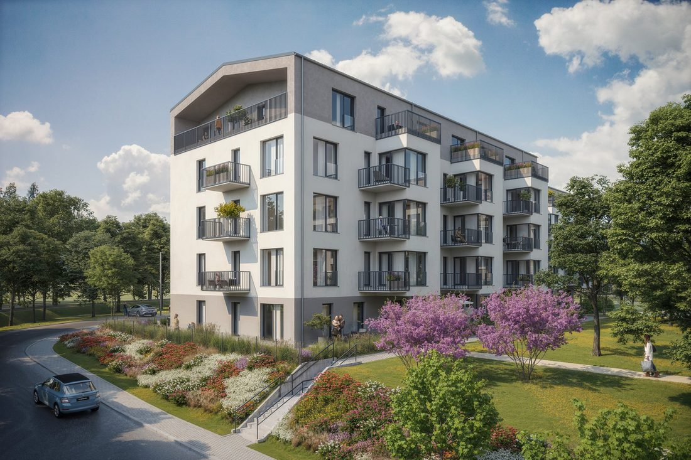
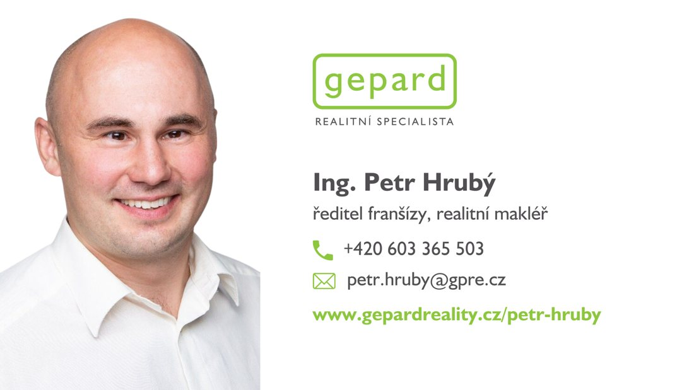

Komentář · namluví profesionální hlas
Dva návrhy na každý film
Na kameře nikdo nebude, filmy nese hlas a titulky. Vyber si verzi, nebo je klidně smíchej. Čísla jsou z webu projektu a od tebe, centrum podle domluvy 10 minut.
Film 1 · verze 1 · věcně
Byty Borovského ve Slaném. Poslední mezonety čtyři plus kk, každý devadesát tři metrů čtverečních.
Obývák s kuchyní je otevřený až pod střechu. Galerie, krbová kamna a vikýře až k podlaze.
Z obýváku se vychází na balkon do korun stromů.
Dole je ložnice, menší pokoj a koupelna s vanou. Nahoře pod střešními okny druhá ložnice.
K bytu patří parkovací stání. Park je pár kroků od domu, centrum deset minut pěšky.
Dům je zkolaudovaný a byty se předávají na konci roku. Domluvte si prohlídku.
Film 1 · verze 2 · lidsky
Ráno tu slunce svítí přímo do obýváku.
A ten obývák nemá strop. Je otevřený až pod střechu, s galerií a krbovými kamny.
Z vikýřů vyjdete na balkon a máte před sebou koruny stromů.
Dole ložnice a pokoj pro dítě, nahoře další ložnice pod střešními okny. Devadesát tři metrů ve dvou patrech.
Do parku pár kroků, do centra deset minut a autobusem jste za třicet pět minut na pražském metru.
Poslední mezonety v Bytech Borovského. Klíče už na konci roku.
Film 2 · verze 1 · věcně
Slaný, třicet pět minut autobusem od pražského metra.
Tady vyrůstá druhá etapa Verde Slaný. Pět podlaží a čtyřicet osm bytů od jedna plus kk po čtyři plus kk, s balkonem, terasou nebo předzahrádkou.
Takhle vypadá výhled z výšky pátého patra.
Dům stojí v zeleni, hned vedle zrevitalizovaného parku Kumpánova zahrada a zrekonstruované městské plovárny.
Do centra a do obchodů je to deset minut pěšky.
Dokončení je plánované na druhé čtvrtletí roku dva tisíce dvacet osm. Do kolaudace se platí deset procent ceny.
Film 2 · verze 2 · lidsky
Vyjdete z domu a za pár kroků jste v parku.
Kumpánova zahrada s alejemi a fontánou, a v létě plovárna hned vedle.
Do centra a na nákup deset minut pěšky, na pražské metro třicet pět minut autobusem.
Druhá etapa Verde Slaný, čtyřicet osm bytů v pěti podlažích. A z toho pátého budete mít park jako na dlani.
Bydlet se tu bude v roce dva tisíce dvacet osm a do kolaudace stačí zaplatit deset procent.
Titulky písmem Etelka: film o mezonetech v barvách Bytů Borovského, film o druhé etapě v barvách Verde. Vizualizace nesou ve filmu štítek „vizualizace“.



Byty Borovského a Verde Slaný II · komentář3 / 328. 10. 2026